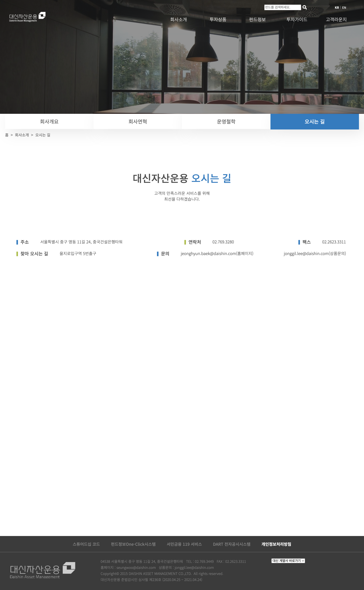
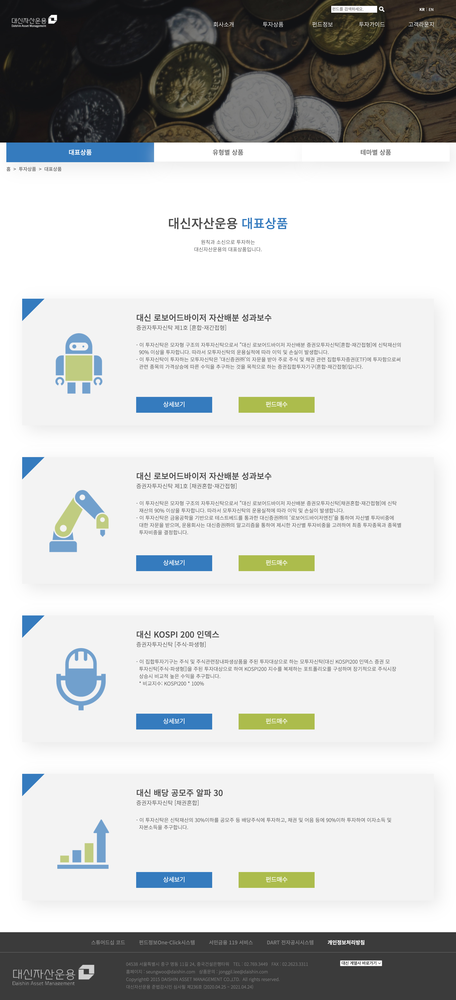
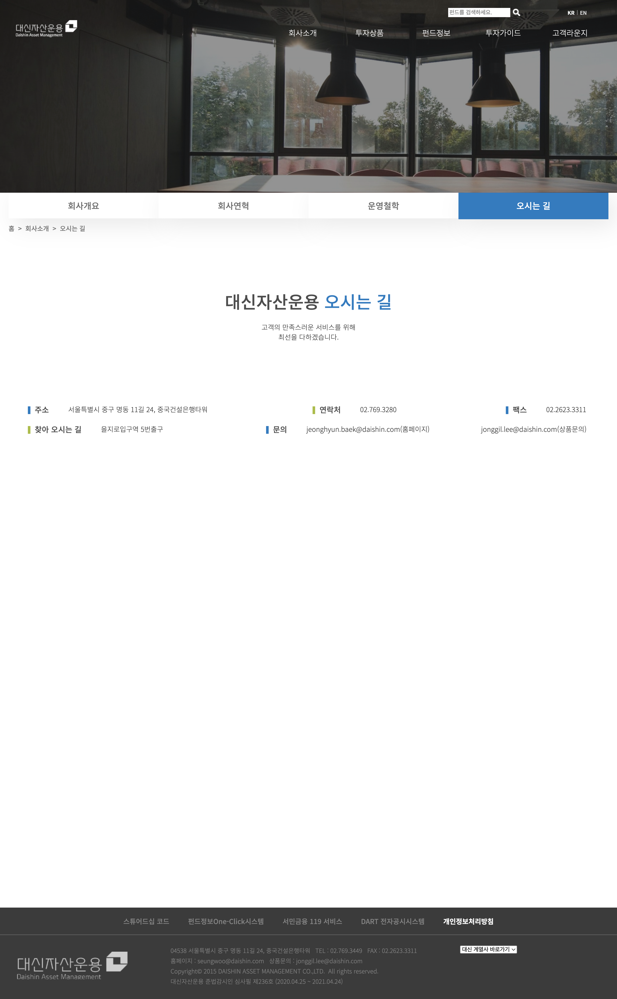
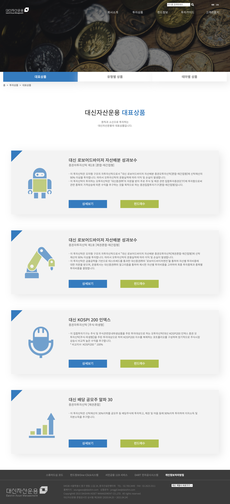

경험과 전문성을 바탕으로 고객의 자산 관리를 위해 정성을 다하는 대신자산운용 홈페이지를 리뉴얼하였습니다. 대신자산운용은 수탁관리자로서 고객의 신뢰를 바탕으로 운용 프로세스, 추천펀드 등 고객이 필요한 정보를 제공하고 있습니다.
리뉴얼 목표
대신자산운용은 정직과 신용을 바탕으로 원칙을 준수하고, 고객으로부터 가장 신뢰받는 자산운용사입니다. 복잡한 레이아웃을 깔끔하게 바꿈으로서 접근성을 높이고, 우선순위에 따른 재배치로 정보 전달력을 높였습니다. 트렌디한 디자인으로 자산운용사로서의 신뢰를 주는 디자인으로 바꾸었습니다.

 


